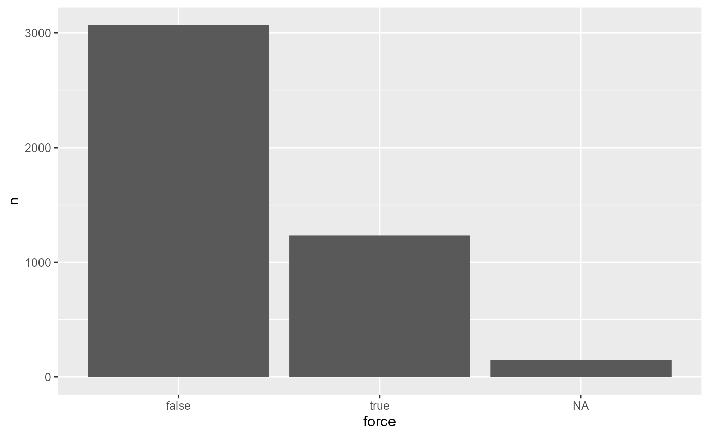
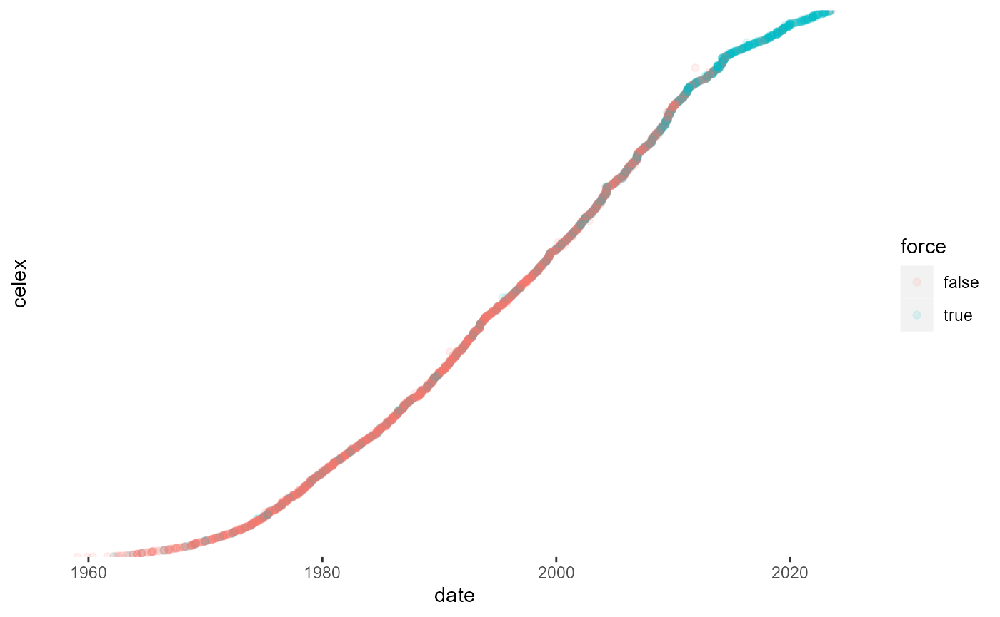

eurlexpkg.RmdThis vignette shows how to use the eurlex R package to retrieve data on European Union law.
Dozens of political scientists and legal scholars use data on European Union laws in their research. The provenance of these data is rarely discussed. More often than not, researchers resort to the quick and dirty technique of scraping entire html pages from eur-lex.europa.eu. This is not the optimal, nor preferred (from the perspective of the server host) approach of retrieving data, however, especially as the Publication Office of the European Union, the public body behind Eur-Lex, operates several dedicated APIs for automated retrieval of its data.
The allure of web scraping is completely understandable. Not only is it easier to download data that can be readily seen in a user-friendly manner through a browser, using the dedicated APIs requires technical knowledge of semantic web and Client URL technologies, which is not necessarily widespread among researchers. And why go through the pain of learning how to compile SPARQL queries when it is much easier to simply download the web page?
The eurlex R package attempts to significantly reduce the overhead associated with using the SPARQL and REST APIs made available by the EU Publication Office. Although at present it does not offer access to the same array of information as comprehensive web scraping might, the package provides simpler, more efficient and transparent access to data on European Union law. This vignette gives a quick guide to the package and an even quicker introduction to the Eur-Lex dataverse.
eurlex packageThe eurlex package currently envisions the typical use-case to consist of getting bulk information about EU legislation into R as fast as possible. The package contains three core functions to achieve that objective: elx_make_query() to create pre-defined or customized SPARQL queries; elx_run_query() to execute the pre-made or any other manually input query; and elx_fetch_data() to fire GET requests for certain metadata to the REST API.
The package also contains largely self-explanatory functions for retrieving data on EU court cases (elx_curia_list()) and Council votes (elx_council_votes()) from outside Eur-Lex.
elx_make_query(): Generate SPARQL queriesThe function elx_make_query takes as its first argument the type of resource to be retrieved from the semantic database that powers Eur-Lex (and other publications) called Cellar.
library(eurlex) library(dplyr) # my preference, not needed for the package query_dir <- elx_make_query(resource_type = "directive")
Currently, it is possible to choose from among a host of resource types, including directives, regulations and even case law (see function description for the full list). It is also possible to manually specify a resource type from the eligible list.1
The choice of resource type is then reflected in the SPARQL query generated by the function:
query_dir %>% cat() # for nicer printing #> PREFIX cdm: <http://publications.europa.eu/ontology/cdm#> #> PREFIX annot: <http://publications.europa.eu/ontology/annotation#> #> PREFIX skos:<http://www.w3.org/2004/02/skos/core#> #> PREFIX dc:<http://purl.org/dc/elements/1.1/> #> PREFIX xsd:<http://www.w3.org/2001/XMLSchema#> #> PREFIX rdf:<http://www.w3.org/1999/02/22-rdf-syntax-ns#> #> PREFIX owl:<http://www.w3.org/2002/07/owl#> #> select distinct ?work ?type ?celex where{ ?work cdm:work_has_resource-type ?type. FILTER(?type=<http://publications.europa.eu/resource/authority/resource-type/DIR>|| #> ?type=<http://publications.europa.eu/resource/authority/resource-type/DIR_IMPL>|| #> ?type=<http://publications.europa.eu/resource/authority/resource-type/DIR_DEL>) #> FILTER not exists{?work cdm:work_has_resource-type <http://publications.europa.eu/resource/authority/resource-type/CORRIGENDUM>} OPTIONAL{?work cdm:resource_legal_id_celex ?celex.} } elx_make_query(resource_type = "caselaw") %>% cat() #> PREFIX cdm: <http://publications.europa.eu/ontology/cdm#> #> PREFIX annot: <http://publications.europa.eu/ontology/annotation#> #> PREFIX skos:<http://www.w3.org/2004/02/skos/core#> #> PREFIX dc:<http://purl.org/dc/elements/1.1/> #> PREFIX xsd:<http://www.w3.org/2001/XMLSchema#> #> PREFIX rdf:<http://www.w3.org/1999/02/22-rdf-syntax-ns#> #> PREFIX owl:<http://www.w3.org/2002/07/owl#> #> select distinct ?work ?type ?celex where{ ?work cdm:work_has_resource-type ?type. FILTER(?type=<http://publications.europa.eu/resource/authority/resource-type/JUDG>|| #> ?type=<http://publications.europa.eu/resource/authority/resource-type/ORDER>|| #> ?type=<http://publications.europa.eu/resource/authority/resource-type/OPIN_JUR>|| #> ?type=<http://publications.europa.eu/resource/authority/resource-type/THIRDPARTY_PROCEED>|| #> ?type=<http://publications.europa.eu/resource/authority/resource-type/GARNISHEE_ORDER>|| #> ?type=<http://publications.europa.eu/resource/authority/resource-type/RULING>|| #> ?type=<http://publications.europa.eu/resource/authority/resource-type/JUDG_EXTRACT>|| #> ?type=<http://publications.europa.eu/resource/authority/resource-type/INFO_JUDICIAL>|| #> ?type=<http://publications.europa.eu/resource/authority/resource-type/VIEW_AG>|| #> ?type=<http://publications.europa.eu/resource/authority/resource-type/OPIN_AG>) OPTIONAL{?work cdm:resource_legal_id_celex ?celex.} } elx_make_query(resource_type = "manual", manual_type = "SWD") %>% cat() #> PREFIX cdm: <http://publications.europa.eu/ontology/cdm#> #> PREFIX annot: <http://publications.europa.eu/ontology/annotation#> #> PREFIX skos:<http://www.w3.org/2004/02/skos/core#> #> PREFIX dc:<http://purl.org/dc/elements/1.1/> #> PREFIX xsd:<http://www.w3.org/2001/XMLSchema#> #> PREFIX rdf:<http://www.w3.org/1999/02/22-rdf-syntax-ns#> #> PREFIX owl:<http://www.w3.org/2002/07/owl#> #> select distinct ?work ?type ?celex where{ ?work cdm:work_has_resource-type ?type.FILTER(?type=<http://publications.europa.eu/resource/authority/resource-type/SWD>) #> FILTER not exists{?work cdm:work_has_resource-type <http://publications.europa.eu/resource/authority/resource-type/CORRIGENDUM>} OPTIONAL{?work cdm:resource_legal_id_celex ?celex.} }
There are various ways of querying the same information in the Cellar database due to the existence of several overlapping classes and identifiers describing the same resources. The queries generated by the function should offer a reliable way of obtaining exhaustive results, as they have been validated by the helpdesk of the Publication Office. At the same time, it is always possible there will be issues either on the query or the database side; please report any you encounter through Github.
The other arguments in elx_make_query() relate to additional metadata to be returned. The results include by default the CELEX number and exclude corrigenda (corrections of errors in legislation). Other data needs to be opted into. Make sure to select ones that are logically compatible (e.g. case law does not have a legal basis). More options should be added in the future.
Note that availability of data for each variable might have an impact on the results. The data frame returned by the query might be shrunken to the size of the variable with most missing data. It is recommended to always compare results from a desired query to a minimal query requesting only celex ids.
elx_make_query(resource_type = "directive", include_date = TRUE, include_force = TRUE) %>% cat() #> PREFIX cdm: <http://publications.europa.eu/ontology/cdm#> #> PREFIX annot: <http://publications.europa.eu/ontology/annotation#> #> PREFIX skos:<http://www.w3.org/2004/02/skos/core#> #> PREFIX dc:<http://purl.org/dc/elements/1.1/> #> PREFIX xsd:<http://www.w3.org/2001/XMLSchema#> #> PREFIX rdf:<http://www.w3.org/1999/02/22-rdf-syntax-ns#> #> PREFIX owl:<http://www.w3.org/2002/07/owl#> #> select distinct ?work ?type ?celex str(?date) ?force where{ ?work cdm:work_has_resource-type ?type. FILTER(?type=<http://publications.europa.eu/resource/authority/resource-type/DIR>|| #> ?type=<http://publications.europa.eu/resource/authority/resource-type/DIR_IMPL>|| #> ?type=<http://publications.europa.eu/resource/authority/resource-type/DIR_DEL>) #> FILTER not exists{?work cdm:work_has_resource-type <http://publications.europa.eu/resource/authority/resource-type/CORRIGENDUM>} OPTIONAL{?work cdm:resource_legal_id_celex ?celex.} OPTIONAL{?work cdm:work_date_document ?date.} OPTIONAL{?work cdm:resource_legal_in-force ?force.} } # minimal query: elx_make_query(resource_type = "directive") elx_make_query(resource_type = "recommendation", include_date = TRUE, include_lbs = TRUE) %>% cat() #> PREFIX cdm: <http://publications.europa.eu/ontology/cdm#> #> PREFIX annot: <http://publications.europa.eu/ontology/annotation#> #> PREFIX skos:<http://www.w3.org/2004/02/skos/core#> #> PREFIX dc:<http://purl.org/dc/elements/1.1/> #> PREFIX xsd:<http://www.w3.org/2001/XMLSchema#> #> PREFIX rdf:<http://www.w3.org/1999/02/22-rdf-syntax-ns#> #> PREFIX owl:<http://www.w3.org/2002/07/owl#> #> select distinct ?work ?type ?celex str(?date) ?lbs ?lbcelex ?lbsuffix where{ ?work cdm:work_has_resource-type ?type. FILTER(?type=<http://publications.europa.eu/resource/authority/resource-type/RECO>|| #> ?type=<http://publications.europa.eu/resource/authority/resource-type/RECO_DEC>|| #> ?type=<http://publications.europa.eu/resource/authority/resource-type/RECO_DIR>|| #> ?type=<http://publications.europa.eu/resource/authority/resource-type/RECO_OPIN>|| #> ?type=<http://publications.europa.eu/resource/authority/resource-type/RECO_RES>|| #> ?type=<http://publications.europa.eu/resource/authority/resource-type/RECO_REG>|| #> ?type=<http://publications.europa.eu/resource/authority/resource-type/RECO_RECO>|| #> ?type=<http://publications.europa.eu/resource/authority/resource-type/RECO_DRAFT>) #> FILTER not exists{?work cdm:work_has_resource-type <http://publications.europa.eu/resource/authority/resource-type/CORRIGENDUM>} OPTIONAL{?work cdm:resource_legal_id_celex ?celex.} OPTIONAL{?work cdm:work_date_document ?date.} OPTIONAL{?work cdm:resource_legal_based_on_resource_legal ?lbs. #> ?lbs cdm:resource_legal_id_celex ?lbcelex. #> OPTIONAL{?bn owl:annotatedSource ?work. #> ?bn owl:annotatedProperty <http://publications.europa.eu/ontology/cdm#resource_legal_based_on_resource_legal>. #> ?bn owl:annotatedTarget ?lbs. #> ?bn annot:comment_on_legal_basis ?lbsuffix}} } # minimal query: elx_make_query(resource_type = "recommendation")
You can also decide to not specify any resource types, in which case all types of documents will be returned. As there are over a million documents with a CELEX identifier, this is likely not efficient for a majority of users. But since version 0.3.5 it is possible to request documents belonging to a particular “sector” or directory code.
# request documents from directory 18 ("Common Foreign and Security Policy") # and sector 3 ("Legal acts") elx_make_query(resource_type = "any", directory = "18", sector = 3) %>% cat() #> PREFIX cdm: <http://publications.europa.eu/ontology/cdm#> #> PREFIX annot: <http://publications.europa.eu/ontology/annotation#> #> PREFIX skos:<http://www.w3.org/2004/02/skos/core#> #> PREFIX dc:<http://purl.org/dc/elements/1.1/> #> PREFIX xsd:<http://www.w3.org/2001/XMLSchema#> #> PREFIX rdf:<http://www.w3.org/1999/02/22-rdf-syntax-ns#> #> PREFIX owl:<http://www.w3.org/2002/07/owl#> #> select distinct ?work ?type ?celex where{ #> VALUES (?value) #> { (<http://publications.europa.eu/resource/authority/fd_555/18>) #> (<http://publications.europa.eu/resource/authority/dir-eu-legal-act/18>) #> } #> {?work cdm:resource_legal_is_about_concept_directory-code ?value. #> } #> UNION #> {?work cdm:resource_legal_is_about_concept_directory-code ?directory. #> ?value skos:narrower+ ?directory. #> } #> #> ?work cdm:resource_legal_id_sector ?sector. #> FILTER(str(?sector)='3') #> #> FILTER not exists{?work cdm:work_has_resource-type <http://publications.europa.eu/resource/authority/resource-type/CORRIGENDUM>} OPTIONAL{?work cdm:resource_legal_id_celex ?celex.} }
Now that we have a query, we are ready to run it.
elx_run_query(): Execute SPARQL querieselx_run_query() sends SPARQL queries to a pre-specified endpoint. The function takes the query string as the main argument, which means you can manually pass it any working SPARQL query (relevant to official EU publications).
results <- elx_run_query(query = query_dir) # the functions are compatible with piping # # elx_make_query("directive") %>% # elx_run_query()
as_tibble(results) #> # A tibble: 4,317 x 3 #> work type celex #> <chr> <chr> <chr> #> 1 http://publications.europa.eu/resourc~ http://publications.europa.eu/~ 31979L~ #> 2 http://publications.europa.eu/resourc~ http://publications.europa.eu/~ 31989L~ #> 3 http://publications.europa.eu/resourc~ http://publications.europa.eu/~ 31984L~ #> 4 http://publications.europa.eu/resourc~ http://publications.europa.eu/~ 31966L~ #> # ... with 4,313 more rows
The function outputs a data.frame where each column corresponds to one of the requested variables, while the rows accumulate observations of the resource type satisfying the query criteria. Obviously, the more data is to be returned, the longer the execution time, varying from a few seconds to several minutes, depending also on your connection.
The first column always contains the unique URI of a “work” (legislative act or court judgment) which identifies each resource in Cellar. Several human-readable identifiers are normally associated with each “work” but the most useful one is CELEX, retrieved by default.2
One column you should always pay attention to is type (as in resource_type). The URIs contained there reflect the FILTER argument in the SPARQL query, which is manually pre-specified. All resources are indexed as being of one type or another. For example, when retrieving directives, the results are going to return also delegated directives, which might not be desirable, depending on your needs. You can filter results by type to make the necessary adjustments. The queries are expansive by default in the spirit of erring on the side of over-inclusiveness rather than vice versa.
head(results$type,5) #> [1] "http://publications.europa.eu/resource/authority/resource-type/DIR" #> [2] "http://publications.europa.eu/resource/authority/resource-type/DIR" #> [3] "http://publications.europa.eu/resource/authority/resource-type/DIR" #> [4] "http://publications.europa.eu/resource/authority/resource-type/DIR" #> [5] "http://publications.europa.eu/resource/authority/resource-type/DIR" results %>% distinct(type) #> # A tibble: 3 x 1 #> type #> <chr> #> 1 http://publications.europa.eu/resource/authority/resource-type/DIR #> 2 http://publications.europa.eu/resource/authority/resource-type/DIR_IMPL #> 3 http://publications.europa.eu/resource/authority/resource-type/DIR_DEL
The data is returned in the long format, which means that rows are recycled up to the length of the variable with the most data points. For example, if 20 directives are returned, each with two legal bases, the resulting data.frame will have 40 rows. Some variables, such as dates, contain unexpectedly several entries for some documents. You should always check the number of unique identifiers in the results instead of assuming that each row is a unique observation.
EuroVoc is a multilingual thesaurus, keywords from which are used to describe the content of European Union documents. Most resource types that can be retrieved with the pre-defined queries in this package can be accompanied by EuroVoc keywords and these can be retrieved as other variables.
rec_eurovoc <- elx_make_query("recommendation", include_eurovoc = TRUE, limit = 10) %>% elx_run_query() # truncated results for sake of the example rec_eurovoc %>% select(celex, eurovoc) #> # A tibble: 10 x 2 #> celex eurovoc #> <chr> <chr> #> 1 32012H0090 http://eurovoc.europa.eu/1425 #> 2 31962H0816 http://eurovoc.europa.eu/1004 #> 3 31974H0435 http://eurovoc.europa.eu/1085 #> 4 31996H0592 http://eurovoc.europa.eu/1076 #> # ... with 6 more rows
By default, the endpoint returns the EuroVoc concept codes rather than the labels (keywords). The function elx_label_eurovoc() needs to be called to obtain a look-up table with the labels.
eurovoc_lookup <- elx_label_eurovoc(uri_eurovoc = rec_eurovoc$eurovoc) print(eurovoc_lookup) #> # A tibble: 9 x 2 #> eurovoc labels #> <chr> <chr> #> 1 http://eurovoc.europa.eu/1085 France #> 2 http://eurovoc.europa.eu/1442 food inspection #> 3 http://eurovoc.europa.eu/1076 form #> 4 http://eurovoc.europa.eu/1318 Germany #> # ... with 5 more rows
The results include labels only for unique identifiers, but with dplyr::left_join() it is straightforward to append the labels to the entire dataset.
rec_eurovoc %>% left_join(eurovoc_lookup) #> Joining, by = "eurovoc" #> # A tibble: 10 x 5 #> work type celex eurovoc labels #> <chr> <chr> <chr> <chr> <chr> #> 1 http://publications.euro~ http://publications.e~ 32012~ http://euro~ consumer~ #> 2 http://publications.euro~ http://publications.e~ 31962~ http://euro~ welfare #> 3 http://publications.euro~ http://publications.e~ 31974~ http://euro~ France #> 4 http://publications.euro~ http://publications.e~ 31996~ http://euro~ form #> # ... with 6 more rows
As elsewhere in the API, we can tap into the multilingual nature of EU documents also when it comes to the EuroVoc keywords. Moreover, most concepts in the thesaurus are associated with alternative labels; these can be returned as well (separated by a comma).
eurovoc_lookup <- elx_label_eurovoc(uri_eurovoc = rec_eurovoc$eurovoc, alt_labels = TRUE, language = "sk") rec_eurovoc %>% left_join(eurovoc_lookup) %>% select(celex, eurovoc, labels) #> Joining, by = "eurovoc" #> # A tibble: 10 x 3 #> celex eurovoc labels #> <chr> <chr> <chr> #> 1 32012H00~ http://eurovoc.europa.eu~ informácie pre spotrebitela,vzdelávanie s~ #> 2 31962H08~ http://eurovoc.europa.eu~ blahobyt #> 3 31974H04~ http://eurovoc.europa.eu~ Francúzska republika,Francúzsko #> 4 31996H05~ http://eurovoc.europa.eu~ formulár #> # ... with 6 more rows
elx_fetch_data(): Fire GET requestsA core contribution of the SPARQL requests is that we obtain a comprehensive list of identifiers that we can subsequently use to obtain more data relating to the document in question. While the results of the SPARQL queries are useful also for webscraping (with the rvest package), the function elx_fetch_data() enables us to fire GET requests to retrieve data on documents with known identifiers (including Cellar URI).
One of the most sought-after data in the Eur-Lex dataverse is the text. It is possible now to automate the pipeline for downloading html and plain texts from Eur-Lex. Similarly, you can retrieve the title of the document. For both you can specify also the desired language (English by default). Other metadata might be added in the future.
# the function is not vectorized by default elx_fetch_data(results$work[1],"title") #> [1] "Council Directive 79/173/EEC of 6 February 1979 on the programme for the acceleration and guidance of collective irrigation works in Corsica" # we can use purrr::map() to play that role library(purrr) dir_titles <- results[1:10,] %>% # take the first 10 directives only to save time mutate(title = map_chr(work,elx_fetch_data, "title")) %>% as_tibble() %>% select(celex, title) print(dir_titles) #> # A tibble: 10 x 2 #> celex title #> <chr> <chr> #> 1 31979L0173 Council Directive 79/173/EEC of 6 February 1979 on the programme f~ #> 2 31989L0194 Council Directive 89/194/EEC of 13 March 1989 amending Directive 6~ #> 3 31984L0378 Council Directive 84/378/EEC of 28 June 1984 amending the Annexes ~ #> 4 31966L0683 Commission Directive 66/683/EEC of 7 November 1966 eliminating all~ #> # ... with 6 more rows
Note that text requests are by far the most time-intensive; requesting the full text for thousands of documents is liable to extend the run-time into hours. Texts are retrieved from html by priority, but methods for pdfs and .docs are also implemented.3 The function even handles multi-document resources (by pasting them together).
In this section I showcase a simple application of eurlex on making overviews of EU legislation. First, we collate data on directives.
dirs <- elx_make_query(resource_type = "directive", include_date = TRUE, include_force = TRUE) %>% elx_run_query() %>% rename(date = `callret-3`)
Let’s calculate the proportion of directives currently in force in the entire set of directives ever adopted. This variable offers a particularly good demonstration of the usefulness of the package to retrieve EU law data, because it changes every day, as new acts enter into force and old ones drop out. Regularly scraping webpages for this purpose and scale is simply impractical and disproportional.

Directives become naturally outdated with time. It might be all the more interesting to see which older acts are thus still surviving.
dirs %>% filter(!is.na(force)) %>% mutate(date = as.Date(date)) %>% ggplot(aes(x = date, y = celex)) + geom_point(aes(color = force), alpha = 0.1) + theme(axis.text.y = element_blank(), axis.line.y = element_blank(), axis.ticks.y = element_blank())

We want to know a bit more about the directives from 1970s that are still in force today. Their titles could give us a clue.
dirs_1970_title <- dirs %>% filter(between(as.Date(date), as.Date("1970-01-01"), as.Date("1980-01-01")), force == "true") %>% mutate(title = map_chr(work,elx_fetch_data,"title")) %>% as_tibble() print(dirs_1970_title) #> # A tibble: 70 x 6 #> work type celex date force title #> <chr> <chr> <chr> <chr> <chr> <chr> #> 1 http://publications~ http://publicatio~ 31975~ 1975~ true Council Directive ~ #> 2 http://publications~ http://publicatio~ 31977~ 1977~ true First Commission D~ #> 3 http://publications~ http://publicatio~ 31977~ 1977~ true Council Directive ~ #> 4 http://publications~ http://publicatio~ 31973~ 1973~ true Council Directive ~ #> # ... with 66 more rows
I will use the tidytext package to get a quick idea of what the legislation is about.
library(tidytext) library(wordcloud) dirs_1970_title %>% select(celex,title) %>% unnest_tokens(word, title) %>% count(celex, word, sort = TRUE) %>% filter(!grepl("\\d", word)) %>% bind_tf_idf(word, celex, n) %>% with(wordcloud(word, tf_idf, max.words = 40, scale = c(1.8,0.1)))
I use term-frequency inverse-document frequency (tf-idf) to weight the importance of the words in the wordcloud. If we used pure frequencies, the wordcloud would largely consist of words conveying little meaning (“the”, “and”, …).
This is an extremely basic application of the eurlex package. Much more sophisticated methods can be used to analyse both the content and metadata of European Union legislation. If the package is useful for your research, please consider citing the accompanying paper.4
Note, however, that not all resource types will work properly with the pre-specified query.↩
Occasionally, you may encounter legal acts without CELEX numbers, especially when digging through older legislation. It is good to report these to the Eur-Lex helpdesk.↩
It is worth pointing out that the html and pdf contents of older case law differs. Whereas typically the html file is only going to contain a summary and grounds of a judgment, the pdf should also contain background to the dispute.↩
Michal Ovádek (2021) Facilitating access to data on European Union laws, Political Research Exchange, 3:1, DOI: 10.1080/2474736X.2020.1870150↩